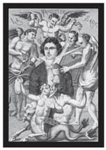

SAPKIN ZEVKLER
Gayet insancadır bu. Hepimizin içinde bir orman vardır.
Diane Frolov & Andrew Schneider
Northern Exposure
Her ne kadar ahlaka ve ahlakdışılığa dair kabul gören kurallar ve düzenlemeler olsa da, hatta belki de onlar yüzünden, sınırları zorlamayı, o heyecanı biraz daha yaşayabilmek için hep daha ileri gitmeyi sevenler olmuştur. Bu çoğu durumda zararsızdır, gizli edepsiz bir dövme ya da yasadışı erotik edebiyatın verdiği heyecan gibi. Yine de bazen eğilimler daha tehlikeli bir sapkınlık dünyasına doğru kayıverir. Aktör ve oyun yazarı David Garrick, seçkin edebiyatçı Samuel Johnson’a hayatta en önem verdiği iki şeyi sorduğunda, Johnson “içmek ve sikişmek” cevabını vermekte tereddüt etmemiştir. Fakat Johnson, “erdemlerinden vazgeçen kişinin büyük adam olamayacağını” da söylemiş ve davranış kurallarını bir buyruk olarak görüp, dünyevi içgüdülerini kontrol edebilmek için daima çabalamıştır.
Marquis de Sade

Marquis de Sade’nin sürreal bir portresi (1886)
Kendini kontrol etmeye dair herhangi bir mefhumu umursamadığı anlaşılan Marquis de Sade, zalimlik ve cinsel işkenceyle özdeşleştirilmiştir. Hatta ‘sadizm’ kelimesi onun isminden türetilmiştir. Kötü şöhreti esas olarak üç olaydan kaynaklanır: Rose Keller’in kırbaçlanması ve hapsedilmesi, kuduzböceği ile zehirleme ve bir dizi bakirenin kaçırılması iddiası. Bunların yanında birçok fahişe ve hizmetkarın cinsel istismar ve sapkınlığa dair şikayetleri ve Sade’nin hapiste yazdığı romanlar... Cinsel sapkınlık hikayeleri, yüz kızartıcı ününü sağlamlaştırmıştır.
Rose Keller skandalı 1763’ün Paskalya Bayramı’nda gerçekleşmiştir. Keller’in bir fahişe olup olmadığı tartışma konusudur. Sonuç olarak Sade bir şekilde onu Paris yakınlarındaki Arcueil’deki şatosunda kendisine eşlik etmeye ikna etmiştir. Burada onu bağlayarak kırbaçladığı, derisinde yaralar açtığı, sonra da bu yaralara merhem sürüp kadını yatırdığı anlatılır. Rose çarşafları kullanarak ikinci kat penceresinden kaçmıştır. Sade bunun yaraları iyileştiren bir merhem üretmek için yapılmış değerli bir araştırma olduğunu savunsa da bu yüzden hapiste yedi ay geçirmek zorunda kalmıştır.
1763’te anlaşmalı bir evliliğe zorlanan de Sade, aslında karısının küçük kardeşi Anne-Prospère’e âşıktır. Sade bu evliliğe rıza gösterilmesi için yalvarır fakat hem kayınvalidesi hem de kayınpederi bu birlikteliğe izin vermez. Ancak Anne-Prospère daha sonra, 1772’de, Sade’nin Provence, Lacoste’deki şatosuna onunla birlikte yaşamaya gitmiştir. ‘Zehirleme’ olayının bu zamanlarda, Marsilya’da gerçekleştiği söylenmektedir.
Bir baloda misafirlere öyle lezzetli çikolatalar ikram edilir ki herkes çikolataya yumulur. Sade’nin çikolataya afrodizyak olarak bilinen kuduzböceğini toz haline getirerek kattığından ise habersizdirler. Sonrasında balonun ateşli bir seks partisine dönüştüğü söylenir. Ne yazık ki yüksek dozda alınan kuduzböceği zehirlidir ve kimse ölmese de çoğu kişi hasta olur.
Sade ve uşağı Latour zehirleme ve sodomiyle suçlanarak gıyabında idama mahkum edilirler. Çünkü Sade, Anne-Prospère ile İtalya’ya kaçmıştır fakat Anne-Prospère birkaç ay sonra hasta olur ve orada ölür. Daha sonra, Sade karısı Renée-Pelagie’ye dönerek Lacoste’de saklanır. İyi bir avukatın yardımıyla çoğunlukla hapse girmemeyi başarır ve sonraki birkaç yıl içinde şatoda çalışmak üzere birçok hizmetçi kız tutulur. Kızların çoğu gördükleri kötü muameleden şikayet ederek kısa zamanda şatodan ayrılır, ama yerlerine hemen yenileri bulunur.
1777’de Marquis de Sade oyuna getirilerek Paris’e geri döner ve büyük oranda kayınvalidesi Madame de Montreuil’in çabaları sonucunda Vincennes Şatosu’na hapsedilir. Bundan sonraki otuz yedi senenin çoğunu tutsak olarak geçirir ve pornografik romanlarını yazmaya hapiste başlar. Justine, ou les malheurs de la vertu (Justine – Erdemin Felaketleri) ve Juliette, ou les prospérités du vice (Juliette – Erdemsizliğe Övgü) de hapiste yazdığı kitaplar arasında yer alır. Romanlar iki kız kardeşin başından geçenleri anlatır: Akla gelebilecek her türlü sapkınlığa ve işkenceye maruz kalan erdemli Justine ve kötülükten zevk almasına rağmen mutlu, kaygısız ve müreffeh bir hayat süren Juliette.
Sade’nin bir dizi bakireyi kaçırmak ve öldürmekle suçlanması da Vincennes’deyken olmuştur. Sade bu suçlamaları reddeder ve kızların her birinin nerede olduğuna dair açıklamalarda bulunur. 1781’de karısına kendini savunmak için bir mektup yazar ve şöyle der: “Evet, ahlaksızlığımı kabul ediyorum, bu konuda yapılabilecek her şeyi düşündüm, fakat düşündüklerimin hepsini hayata geçirmedim ve öyle bir niyetim de yok. Ahlaksız olabilirim, fakat ne suçluyum ne de katil...” Mektubu kanıyla imzalar.
Sade idam kararının temyizini ister fakat hapiste kalır. Vincennes kapandığında Bastille’ye gönderilir. Hapishane yöneticisinin cinsel alışkanlıklarını yoldan geçenlere bağıra bağıra anlatmaya başlayınca da Charentes’teki bir akıl hastanesine kapatılır.
Yeni Dünya Sapkınlığı
Suç ve kabahatler üzerine konuşulacaksa, ki bunlara cinsellikle ilgili olanlar da dahildir, mahkeme kayıtları her zaman faydalı kaynaklardır. Söz konusu olan ister zamanın ahlak anlayışına aykırı bir günah olsun, ister gerçek bir suç, mahkeme kayıtları her vakaya ilişkin ayrıntılı bilgi içerir. 1620’nin Aralık ayında Seyyah Papazlar Mayflower15 gemisi ile Plymouth Körfezi’ne doğru yelken açtıklarında, William Bradford Yeni Dünya’daki hayatı detaylarıyla anlattığı bir günlük tutmaya başlar. 1621’den itibaren Plymouth sömürgesini yönetmekle yükümlü olduğundan, ne olup bittiğine hâkimdir.
Vali Bradford Plymouth Plantasyonu’nun iki ciltlik ayrıntılı bir tarihini yazar. Düşük nüfus, açlık, zorlu hayat koşulları ve salgın hastalıklar çevrede yaşayan halkın gündelik dertlerini daha da ağırlaştırmış, üstüne bir de Bradford’u sürekli evliliğe ve ahlaka dair sorunlarla ilgilenmek zorunda bırakmıştır. Suçun niteliğine bağlı olarak, çok sert cezaların da verildiği sıkça görülürmektedir. Bu olayların en üzücü olanlarından biri 1642’de kayıtlara geçmiştir.
Thomas Granger adında on altı yaşında bir genç, bir kısrakla suçüstü yakalanmıştır. Bradford şöyle yazdı “O sene sodomisi ortaya çıkarılmıştı ve aynı suçu bir inek, iki keçi, beş koyun, iki dana ve bir hindiyle de işlemişti. Bundan bahsetmek korkunç, fakat tarih bunu zorunlu kılıyor.”
Zavallı Granger sorgulama sırasında aynı suçu bir kısrak ve diğer tüm hayvanlarla defalarca işlediğini itiraf etmiş, mahkeme heyeti ve jürinin önünde suçunu kabul etmişti. Sonra her hayvanı tek tek teşhis etmiş, sıra koyunlara gelene kadar kolayca ilerlemiş fakat koyunları birbirinden ayırmakta epey zorlanmıştı. Burada komik olan işlenen günah nedeniyle sadece Granger’in değil hayvanların da idam edilmesiydi: “Tüm hayvanlar bu amaçla kazılmış büyük ve derin bir çukura atıldı ve hiçbir parçasından faydalanılmadı.”
Bradford’un kayıtları bu gibi vakaların, düşünüldüğü kadar sıradışı olmadığını ortaya koymaktadır. New Haven sömürgesinde yönetici olan Theophilus Eaton, Thomas Hogg adında bir adamın bir dişi domuzdan doğan yavruya babalık ettiği benzer bir vakayı aktarır. İnanılması zor ama domuz yavrusunun adama çarpıcı benzerliği kanıt olarak görülmüştür, her ikisinde de göz tembelliği vardır.
Bu vakada Hogg, arzularından arınması için kırbaç ve ağır işlerde çalışmakla cezalandırıldıktan sonra salıverilmiştir. Tarih, domuzun başından geçenleri ise kaydetmemiştir.
Cehennem Ateşi Kulübü
Cehennem Ateşi Kulübü, Wharton Dükü Philip tarafından 1719’da, üst sınıfların her türlü ihtiyacının karşılandığı kulüplerini hicvetmek için kurulmuştu. Amaç dini ve ahlakı hicvederek toplumu sarsmaktı, fakat ciddi bir saldırıdan ziyade şaka amaçlı kurulmuştu. Başkana Şeytan, üyelere de İblisler denir, kulübün ismi de buradan gelirdi; fakat satanik bir tapınma ya da inanca dair herhangi bir kanıt yoktu. Wharton da bir yandan önde gelen iyi eğitimli bir siyasetçi, diğer yandan da serbest düşünceli, ayyaş, çapkın bir adamdı.
Kulüp pazar günleri, genellikle Greyhound Tavern’da buluşurdu; fakat kulübe -zamanın diğer cemiyetlerinin aksine- kadınlar da kabul edildiğinden ve kadınlar tavernalara giremediğinden evlerde de toplanılırdı. Kulüp 1721’de, I. George Robert Walpole’nin etkisiyle, özellikle Cehennem Ateşi Kulübü’nü hedef alan “Ahlaksızlığa karşı Kanun”u çıkardığında kapanmıştır. Wharton ise önce mason ve sonra İngiltere’de “masonların büyük üstadı” olmuştur.
Francis Dashwood ve Sandwich Kontu’nun 1730’larda Londra, Cornhill’deki George and Vulture Tavern’da toplanan Cehennem Ateşi Kulübü’ne üye olduğu iddia edilir. Dashwood daha sonra, 1746’da, St. Francis Şövalyeleri’ni kuracaktır. Toplantılar iyice popülerleşince taverna küçük gelmeye başlar ve merasimler Dashwood’un West Wycombe’daki köy evine alınır. Buradaki ilk toplantı 1 Mayıs 1752’de, Walpurgis Gecesi’nde yapılır. Toplantı tarihinin şenlik gününe denk getirilmesi, Dashwood’un paganizme yönelik saplantısını göstermektedir.
Daha sonra Dashwood Medmenham Manastırı’nı kiralar. Medmenham Manastırı, Thames Nehri kıyısında, Buckinghamshire yakınlarındaki Marlowe’de, önceden manastır olan bir Tudor köşküdür. Manastırın altında Dashwood’un putperestlere ait bir alan olduğunu düşündüğü bir mağara vardır. Dashwood’un kazılarla ortaya çıkardığı bir dizi başka mağarada kulübün ritüelleri gerçekleştirilir. Üyelerin arasında, Dördüncü Sandwhich Dükü John Montagu, daha sonra Bengal valisi olan Robert Vansittart, Canterbury başpiskoposunun oğlu milletvekili Thomas Potter, radikal görüşlü milletvekili ve gazeteci John Wilkes ve daha sonra ‘Amerika’nın kurucu babaları’ arasında anılacak olan Benjamin Franklin gibi dönemin nüfuzlu kimseleri de vardır. Ressam William Hogarth da kulüple ilişkilidir ve Dashwood’un St. Francis olarak bir portresini yapmıştır.
Toplantılar birçok spekülasyona konu olmuş ve sefahat, pagan orjisi, şeytana tapınma ayini dedikoduları ayyuka çıkmıştı. Söylentileri olgusal gerçeklerden ayırmak zor da olsa, büyük ihtimalle üyeler muhtemelen beyaz ayin kıyafetleri giyerken Dashwood ‘başrahip’ olarak kırmızı giyiyordu. Hiçbiri günümüze ulaşamamış da olsa mağaraların Venüs, Baküs ve Priapos’un mitolojik resimleriyle, ayrıca falluslar ve çeşitli cinsel imgelerle süslendiği söylenir.
Dashwood’un sevgilisinden Cehennem Ateşi At Arabası diye söz edilirdi ve Londra’nın tanınmış genelev işletmecilerinden biriydi. Yanında çalışan fahişelerin çoğu törenlere katılmak için onunla gelirdi. Bu kadın ziyaretçiler, gerçek kimliklerini tam tersiyle örtecek biçimde ‘rahibeler’ olarak adlandırılırlardı. Toplantılar da haftasonu boyunca sürecek muhabbet, ziyafet, içki ve seks âlemi için bahaneydi.
1762’de Francis Dashwood Exchequer Şansölyesi olarak atandı. Ertesi sene elma şarabına koyduğu vergi neredeyse ayaklanmalara sebep oluyordu, bu nedenle istifa etmek zorunda kaldı. Daha sonra Lordlar Kamarası’nda 15. le Despencer Baronu olarak yerini aldı. Toplantılar gittikçe küçüldü ve Cehennem Ateşi Kulübü 1766’da ortadan kalktı.
Kaza Sonucu Ölüm
Tanınmış bir Çek kontrbas sanatçısı ve besteci olan Franz Kotzwara, 20. Yüzyıl sonlarının bazı müzisyenlerini hatırlatacak şekilde dolu dolu yaşamaya, sarhoş kadınlara ve genel kabullerin dışında kalan sekse düşkündü. Göçebe bir hayatı vardı; Avrupa’nın dört bir yanına seyahat ederek farklı orkestralarla çaldı. Fakat 1791 yazı sona ererken Londra’daydı.
2 Eylül akşamında Vine Sokağı, Piccadilly’de yaşayan bir fahişe olan Susannah Hill’e gitti. Birlikte yemek yedikten sonra kadından iki şilin karşılığında testislerini kesmesini istedi. Susannah bu isteği reddetti, fakat Kotzwara bu sefer de boynuna geçirdiği bir bağlama ipini kapının tokmağına bağladı ve Susannah’yla sevişirken kendi kendini boğdu.
Old Bailey’de görülen bu sansasyonel davada, Susannah Hill cinayetle suçlandı. Neyse ki Kotzwara’nın ilginç cinsel eğilimlerine dair yeterince tanık ve kanıt bulmak mümkündü de Hill beraat edebildi. Mahkeme kayıtları bir skandalın önüne geçmek amacıyla yok edildi, fakat öyle görülüyor ki kayıtlar çoğaltılmış ve detaylı resimler içeren bir kitapçık basılmıştır. Bu, büyük ihtimalle kayıtlara geçen ilk otoerotik asfiksi sonucu ölüm vakasıdır.
Çılgın, Kötü ve Tekinsiz Bir Tanıdık
1788’de dünyaya gelen George Gordon Byron, romantik akımın ünlü şairlerinden ve önde gelen figürlerinden biridir. Tam bir aristokrat gösterişçidir ve muazzam borçların altına girmiştir. Fakat adının çıkmasına sebep olan asıl özelliği, ihtiraslı aşk maceraları ve bir ensest ilişkiye dair utanç verici dedikodular olmuştur.
Byron Harrow School ve Trinity College Cambridge’de eğitim almış, üzerine titreyen annesi tarafından çok şımartılmıştı. Disiplin konusunda hep yetersizdi ama doğası gereği tutkuluydu. Şöyle yazar: “Okul arkadaşlarım tutkularımdı (çünkü her zaman coşkuluydum.)”
Büyük turunun rotasını, Napolyon’un seferleri nedeniyle Avrupa’nın büyük kısmına girilemediğinden Akdeniz havzasına ve Doğu Akdeniz’e çevirmiştir. Byron’un ilişkilerinin çoğu bu yolculuktan dönüşüyle başlar. Büyüleyici, parlak zekalı, karanlık ve saplantılı; Lady Caroline Lamb’ın ona “çılgın, kötü ve tekinsiz bir tanıdık” lakabını yakıştırmasına şaşmamak gerekir. Caroline Lamb başta onu reddeder, ancak buna rağmen kısa süre içinde başlayan ilişkileri toplumda bir skandala yol açar. Caroline Lamb daha sonra İngiltere başbakanı olan Lord Melbourne’la evlidir ve Byron’a takıntılıdır, onun at arabasının yanında koşabilmek için uşak kılığına girmesiyle ünlüdür.
Byron ilişkiden bıkar ve kısa sürede eski hayatına döner, ancak Caroline Lamb’ın yarası asla iyileşmez; Byron’un, kuzeni Anne Isabella Milbanke ile evlenmeye karar vermesi de bunda etkili olur. Byron ve Anne’nin Auguste Ada adında bir kızları olur fakat evlilikleri yolunda gitmemektedir. Byron, Anne’ye kaba davranır ve üvey kardeşi Augusta Leigh ile arasındaki ensest ilişkiye dair dedikodular sürüp gider. Bu ikisi büyüme çağındayken birbirlerini pek görmemiş, fakat büyüyüp yetişkin olduklarında güçlü bir bağ kurmuşlardır. Şiddet ve sodomiye dair başka zararlı söylentiler de vardır. Skandal çıkmasını engellemeye gücü yetmeyen Byron, İngiltere’yi 1816’da bir daha dönmemek üzere terk eder. O yazı İtalya’daki Diodati villasında Percy Bysshe Shelley, Shelley’nin müstakbel eşi Mary Godwin ve Godwin’in kuzeni Claire Clairmont ile geçirir. Haftalarca süren yağmur yüzünden villanın içinde kısılıp kalınca oluşan yoğun atmosfer, Mary Shelley’ye Frankenstein’in hikayesini yazmasında ilham kaynağı olur.
Byron yüksek ateş nedeniyle 1824’te Missolonghi’de hayatını kaybeder. Otuz altı yaşındayken Osmanlı İmparatorluğu’nun baskılarına karşı savaşmak üzere Yunanistan’a gitmiştir.
Victoria ve Albert
Kraliçe Victoria ve kocası Prens Albert of Saxe-Coburg’un, yani Victoria döneminin değer yargılarını belirleyen bu yüksek ahlak taraftarlarının hareketli bir cinsel hayatı olduğu ortadaydı. Zira çiftler birbirlerine sevgi ve şefkatle birleşen sağlıklı bir arzu beslemeden dokuz çocuk yapmazlar, 19. Yüzyıl’ın kraliyet ailesinden çiftler bile. Fakat burada birkaç küçük sürprizle de karşılaşıyoruz.
Victoria’nın ‘samimi’ bir bölgeye kondurulmuş, herkesin göremediği küçük bir dövmesi olduğuna dair inatçı dedikodular vardır. Dövmenin bir piton yılanıyla dövüşen bir Bengal kaplanı olduğu söylendiğinden -oldukça cesur ve güçlü bir imge- bunun ne kadar küçük ya da gizli olabileceği de insanın aklına takılır.
Prens Albert’in ise ismini ondan alan çok özel bir kalıcı piercing’i ya da halkası vardır. 19. Yüzyıl’da erkeklerin daracık golf pantolonları giymesi modaydı. Göze hoş görünmeyen şişkinlikleri önlemek için penis idrar yolundan delinir ve bir halka takılırdı. Daha sonra bu halkadan geçirilen bir kurdeleyle organ pantolonun iç dikişine tutturabilirdi. Prens Albert’in halkasının, kesilmemiş sünnet derisini geride tutarak kişisel hijyene yardımcı olduğu da iddia edilir.
15 Mayflower: Kısaca ‘Seyyah Papazlar’ olarak tanınan İngiliz Püritenleri ve Ayrılıkçılarını İngiltere’deki Plymouth’tan Yeni Dünya’ya (Amerika kıtasına) götüren geminin adı. (e.n.)